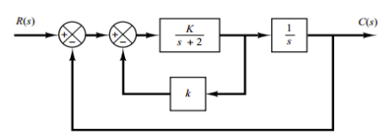
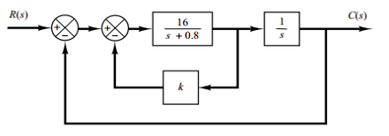
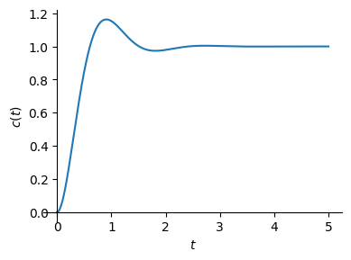

Solved Various Problem Sets#
from IPython.display import display, Markdown
from sympy import *
from sympy.interactive.printing import init_printing
from sympy.abc import s, K, k, t
from mathprint import *
Problem 1#
Topics: block diagram, second-order system

Determine the values of \(K\) and \(k\) such that the system has a damping ratio \(\zeta\) of 0.7 and an undamped natural frequency \(\omega_n\) of \(4 \mathrm{rad} / \mathrm{sec}\).
Solution#
First, simplify the blockdiagram:
G = K / (s+2)
S1 = (G / (1+G*k)) * (1/s) # negative feedback and serial connection
S2 = S1 / (1+S1) # another negative feedback
S2 = collect(expand(simplify(S2)), [s**2, s]) # make it nice
mprint("\\frac{C(s)}{R(s)}=", latex(S2))
Next, the coeficient of \(s\) is \(2 \zeta \omega_n\) and \(K=\omega_n^2\).
zeta = 0.7
omegan = 4
# Take the denom, find the coefficient of s,
# set it equals to 2 * zeta 8 omega_n
eq = Eq(denom(S2).coeff(s), 2*zeta*omegan)
display(eq)
# Set K = omega_n^2
eq = eq.subs(K, omegan**2)
display(eq)
Solve for \(k\):
k_ = solveset(eq, k)
mprint("k=", latex(k_))
So, the final answer is \(k=0.225\).
Problem 2#
Topics: block diagram, second-order system

Determine the value of \(k\) such that the damping ratio \(\zeta\) is 0.5 . Then obtain the rise time \(t_r\), peak time \(t_p\), maximum overshoot \(M_p\), and settling time \(t_s\) in the unit-step response.
Solution#
First, simplify the blockdiagram:
G = 16 / (s+0.8)
S1 = (G / (1+G*k)) * (1/s) # negative feedback and serial connection
S2 = S1 / (1+S1) # another negative feedback
S2 = collect(expand(simplify(S2)), [s**2, s]) # make it nice
mprint("\\frac{C(s)}{R(s)}=", latex(S2))
Finding \(k\) for \(\zeta = 0,5\) and \(\omega_n = 4\). Note that the coeficient of \(s\) is \(2 \zeta \omega_n\).
zeta = 0.5
omegan = 4 #sqrt(16)
# Take the demom, find the coefficient of s,
# set it equals to 2 * zeta 8 omega_n
eq = Eq(denom(S2).coeff(s), 2*zeta*omegan)
kval = solve(eq, k)
mprint("k=", latex(kval[0]))
Thus, \(k=0.2\).
Finally, conclude the system, convert it to a transfer function.
To push things a bit further, we will apply inverse Laplace to bring the response back to time-domain and allow us to plot the result.
Please note that SymPy does have a generic function for plotting a step response out of an s-domanin transfer function. However, we are not going to use it here.
G = S2.subs(k, 0.2)
mprint("G(s)=", latex(G))
from sympy.plotting import plot
C = 1/s * G
c = inverse_laplace_transform(C, s, t)
plot(c, (t, 0, 5), size=(4, 3), ylabel="$c(t)$", show=True);

# Rise time
tr = 2*atan(sqrt(zeta+1) / sqrt(1-zeta)) / (omegan * sqrt(1-zeta**2))
# Peak time
tp = pi / (omegan * sqrt(1 - zeta**2))
# Maximum overshoot
Mp = exp(-pi * zeta / sqrt(1 - zeta**2))
# 2-percent settling time
ts = (3.912023 - 0.5 * log(1 - zeta**2)) / (omegan * zeta)
print('rise time =', tr.evalf())
print('peak time =', tp.evalf())
print('maximum overshoot =', Mp.evalf())
print('2-percent-settling time =', ts)
rise time = 0.604599788078073
peak time = 0.906899682117109
maximum overshoot = 0.163033534821580
2-percent-settling time = 2.02793201811295
Comparison to the Python Control Library#
The results are slightly different from the Python Control Library. This is beacase Python Control Library does the calculations numerically.
import control as ct
s = ct.TransferFunction.s
tf = ct.TransferFunction(16 / (s**2+4*s+16))
ct.step_info(tf, RiseTimeLimits=(0, 1))
{'RiseTime': np.float64(0.6279777526347396),
'SettlingTime': np.float64(2.023483869600828),
'SettlingMin': np.float64(0.9734200938528016),
'SettlingMax': np.float64(1.1630334929041963),
'Overshoot': np.float64(16.303349290419632),
'Undershoot': 0,
'Peak': np.float64(1.1630334929041963),
'PeakTime': np.float64(0.9070789760279573),
'SteadyStateValue': np.float64(1.0)}